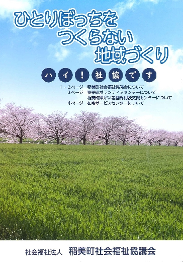

事業紹介
稲美町社会福祉協議会は
こんなことをしています!!

【稲美町社会福祉協議会パンフレット】
【稲美町社会福祉協議会パンフレット】 PDF・2846KB
ボランティア活動・福祉教育の推進
ボランティアセンターの運営
ボランティアの登録
ボランティアの育成
福祉教育
地域福祉活動・在宅福祉活動の推進
福祉委員活動
配食見守り事業
車椅子等の貸出
いきいきサロン
いきいきサロン開催会場一覧 PDF・62KB
いきいきサロン♪「鉄道唱歌いなみ体操」♪歌詞 PDF・245KB
いきいきサロン♪「鉄道唱歌いなみ体操」♪振付 PDF・450KB
募金活動・資金貸付 相談事業
共同募金運動
歳末たすけあい運動
善意銀行の運営
生活福祉資金の貸付
法外援護資金の貸付
相談事業
暮らしの法律相談 司法書士相談
暮らしの法律相談 無料法律相談
日常生活自立支援事業（福祉サービス利用援助事業）
介護相談
広報・啓発活動
社協だよりの発行
各種町行事への参加
福祉関連機関との連絡調整
団体・当事者組織助成等事業
様々な団体活動への支援
当事者組織活動の支援
マイクロバスの運営・管理
介護保険サービス
訪問介護事業
訪問看護事業
小規模多機能型居宅介護事業
ケアプラン作成
障害福祉サービス
居宅介護サービス
移動支援サービス
日中一時支援サービス
相談支援事業